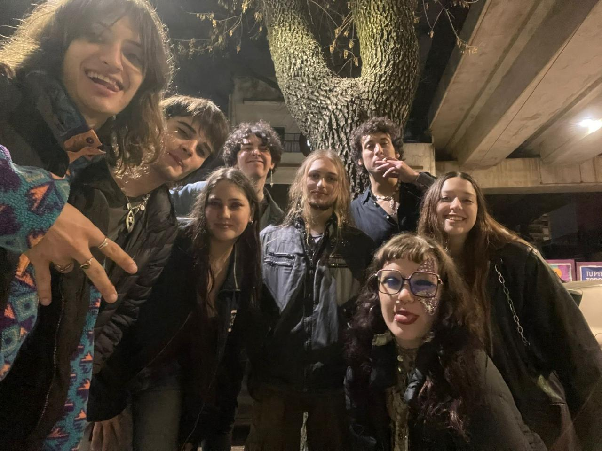
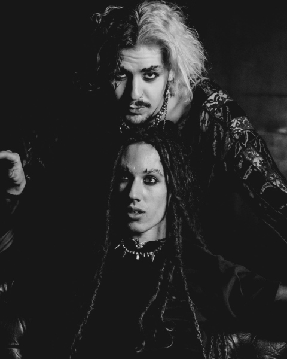
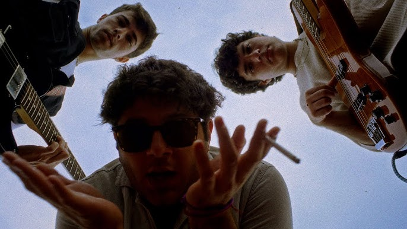

Un poco mas sobre las bandas del under
Blue Camel
Una banda formada en 2024 por Alex Galvan (Guitarra) - Laureano Lucich (Vocalista) - Barton Alvarez (Bajo)- Mort (Bajo)- Juanma Alias Bleckmha (Bateria)
Poción Sirena
La caracteristica banda formada por dos integrantes: Salvador (Bateria) y Ian (Bajo)
Posguerra
Con todo el estilo, el vocalista Pedro formo su banca en 2023 con sus amigos de secundaria. LLevan mas de 2 albumes sacados en todas las plataformas
